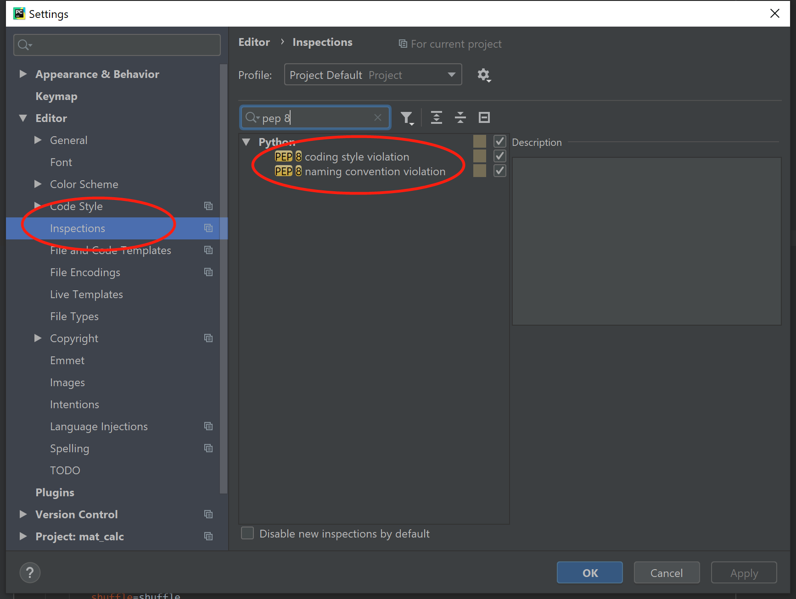

- 00 开篇词 从工程的角度深入理解Python.md.html
- 01 如何逐步突破，成为Python高手？.md.html
- 02 Jupyter Notebook为什么是现代Python的必学技术？.md.html
- 03 列表和元组，到底用哪一个？.md.html
- 04 字典、集合，你真的了解吗？.md.html
- 05 深入浅出字符串.md.html
- 06 Python “黑箱”：输入与输出.md.html
- 07 修炼基本功：条件与循环.md.html
- 08 异常处理：如何提高程序的稳定性？.md.html
- 09 不可或缺的自定义函数.md.html
- 10 简约不简单的匿名函数.md.html
- 11 面向对象（上）：从生活中的类比说起.md.html
- 12 面向对象（下）：如何实现一个搜索引擎？.md.html
- 13 搭建积木：Python 模块化.md.html
- 14 答疑（一）：列表和元组的内部实现是怎样的？.md.html
- 15 Python对象的比较、拷贝.md.html
- 16 值传递，引用传递or其他，Python里参数是如何传递的？.md.html
- 17 强大的装饰器.md.html
- 18 metaclass，是潘多拉魔盒还是阿拉丁神灯？.md.html
- 19 深入理解迭代器和生成器.md.html
- 20 揭秘 Python 协程.md.html
- 21 Python并发编程之Futures.md.html
- 22 并发编程之Asyncio.md.html
- 23 你真的懂Python GIL（全局解释器锁）吗？.md.html
- 24 带你解析 Python 垃圾回收机制.md.html
- 25 答疑（二）：GIL与多线程是什么关系呢？.md.html
- 26 活都来不及干了，还有空注意代码风格？！.md.html
- 27 学会合理分解代码，提高代码可读性.md.html
- 28 如何合理利用assert？.md.html
- 29 巧用上下文管理器和With语句精简代码.md.html
- 30 真的有必要写单元测试吗？.md.html
- 31 pdb & cProfile：调试和性能分析的法宝.md.html
- 32 答疑（三）：如何选择合适的异常处理方式？.md.html
- 33 带你初探量化世界.md.html
- 34 RESTful & Socket：搭建交易执行层核心.md.html
- 35 RESTful & Socket：行情数据对接和抓取.md.html
- 36 Pandas & Numpy：策略与回测系统.md.html
- 37 Kafka & ZMQ：自动化交易流水线.md.html
- 38 MySQL：日志和数据存储系统.md.html
- 39 Django：搭建监控平台.md.html
- 40 总结：Python中的数据结构与算法全景.md.html
- 41 硅谷一线互联网公司的工作体验.md.html
- 42 细数技术研发的注意事项.md.html
- 43 Q&A：聊一聊职业发展和选择.md.html
- 加餐 带你上手SWIG：一份清晰好用的SWIG编程实践指南.md.html
- 结束语 技术之外的几点成长建议.md.html
- 捐赠
27 学会合理分解代码，提高代码可读性
你好，我是景霄。今天我们不讲任何技术知识点，继续来一起聊聊代码哲学。
有句话说得好，好的代码本身就是一份文档。同样功能的一份程序，一个组件，一套系统，让不同的人来写，写出来的代码却是千差万别。
有些人的设计风格和代码风格犹如热刀切黄油，从顶层到底层的代码看下来酣畅淋漓，注释详尽而又精简；深入到细节代码，无需注释也能理解清清楚楚。
而有些人，代码勉勉强强能跑起来，遇到稍微复杂的情况可能就会出 bug；深入到代码中 debug，则发现处处都是魔术数、函数堆在一起。一个文件上千行，设计模式又是混淆不堪，让人实在很难阅读，更别提修改和迭代开发。
Guido van Rossum（吉多·范罗苏姆，Python创始人 ）说过，代码的阅读频率远高于编写代码的频率。毕竟，即使是在编写代码的时候，你也需要对代码进行反复阅读和调试，来确认代码能够按照期望运行。
话不多说，进入正题。
PEP 8 规范
上节课我们简单提起过 PEP 8 ，今天我们继续来详细解读。
PEP是 Python Enhancement Proposal 的缩写，翻译过来叫“Python 增强规范”。正如我们写文章，会有句式、标点、段落格式、开头缩进等标准的规范一样，Python 书写自然也有一套较为官方的规范。PEP 8 就是这样一种规范，它存在的意义，就是让 Python 更易阅读，换句话，增强代码可读性。
事实上，Pycharm 已经内置了 PEP 8 规范检测器，它会自动对编码不规范的地方进行检查，然后指出错误，并推荐修改方式。下面这张图就是其界面。

因此，在学习今天的内容时，我推荐你使用 Pycharm IDE 进行代码检查，看一下自己的代码格式哪里有问题。尤其对于初学者，从某些程度来说，代码规范甚至是比代码准确更重要的事情，因为实际工作中，代码可读性的重要性一定比你想象的多得多。
缩进规范
首先，我们来看代码块内的缩进。
Python 和 C++ / Java 最大的不同在于，后者完全使用大括号来区分代码块，而前者依靠不同行和不同的缩进来进行分块。有一个很有名的比赛，叫作 C 语言混乱代码大赛，其中有很多非常精彩的作品，你能看到书写的代码排成各种形状，有的是一幅画，或者一个卡通头像，但是能执行出惊人的结果。
而放到 Python ，显然就不能实现同样的技巧了。不过，以小换大，我们有了“像阅读英语”一样清晰的 Python 代码，也还是可以接受的。
话说回来，Python 的缩进其实可以写成很多种，Tab、双空格、四空格、空格和 Tab 混合等。而PEP 8 规范告诉我们，请选择四个空格的缩进，不要使用 Tab，更不要 Tab 和空格混着用。
第二个要注意的是，每行最大长度请限制在 79 个字符。
这个原则主要有两个优点，第一个优点比较好理解。很多工程师在编程的时候，习惯一个屏幕并列竖排展示多个源代码。如果某个源代码的某些行过长，你就需要拖动横向滚动条来阅读，或者需要软回车将本行内容放入下一行，这就极大地影响了编码和阅读效率。
至于第二个优点，需要有一定经验的编程经验后更容易理解：因为当代码的嵌套层数过高，比如超过三层之后，一行的内容就很容易超过 79 个字符了。所以，这条规定另一方面也在制约着程序员，不要写迭代过深的代码，而是要思考继续把代码分解成其他函数或逻辑块，来优化自己的代码结构。
空行规范
接着我们来看代码块之间的空行。
我们知道，Python 中的空行对 Python 解释器的执行没有影响，但对阅读体验有很深刻的影响。
PEP 8 规定，全局的类和函数的上方需要空两个空行，而类的函数之间需要空一个空行。当然，函数内部也可以使用空行，和英语的段落一样，用来区分不同意群之间的代码块。但是记住最多空一行，千万不要滥用。
另外，Python 本身允许把多行合并为一行，使用分号隔开，但这是 PEP 8 不推荐的做法。所以，即使是使用控制语句 if / while / for，你的执行语句哪怕只有一行命令，也请另起一行，这样可以更大程度提升阅读效率。
至于代码的尾部，每个代码文件的最后一行为空行，并且只有这一个空行。
空格规范
我们再来看一下，代码块中，每行语句中空格的使用。
函数的参数列表中，调用函数的参数列表中会出现逗号，请注意逗号后要跟一个空格，这是英语的使用习惯，也能让每个参数独立阅读，更清晰。
同理，冒号经常被用来初始化字典，冒号后面也要跟一个空格。
另外，Python 中我们可以使用#进行单独注释，请记得要在#后、注释前加一个空格。
对于操作符，例如+，-，*，/，&，|，=，==，!=，请在两边都保留空格。不过与此对应，括号内的两端并不需要空格。
换行规范
现在再回到缩进规范，注意我们提到的第二点，控制每行的最大长度不超过 79 个字符，但是有时候，函数调用逻辑过长而不得不超过这个数字时，该怎么办呢？
请看下面这段代码，建议你先自己阅读并总结其特点：
def solve1(this_is_the_first_parameter, this_is_the_second_parameter, this_is_the_third_parameter,
this_is_the_forth_parameter, this_is_the_fifth_parameter, this_is_the_sixth_parameter):
return (this_is_the_first_parameter + this_is_the_second_parameter + this_is_the_third_parameter +
this_is_the_forth_parameter + this_is_the_fifth_parameter + this_is_the_sixth_parameter)
def solve2(this_is_the_first_parameter, this_is_the_second_parameter, this_is_the_third_parameter,
this_is_the_forth_parameter, this_is_the_fifth_parameter, this_is_the_sixth_parameter):
return this_is_the_first_parameter + this_is_the_second_parameter + this_is_the_third_parameter + \
this_is_the_forth_parameter + this_is_the_fifth_parameter + this_is_the_sixth_parameter
(top_secret_func(param1=12345678, param2=12345678, param3=12345678, param4=12345678, param5=12345678).check()
.launch_nuclear_missile().wait())
top_secret_func(param1=12345678, param2=12345678, param3=12345678, param4=12345678, param5=12345678).check() \
.launch_nuclear_missile().wait()
事实上，这里有两种经典做法。
第一种，通过括号来将过长的运算进行封装，此时虽然跨行，但是仍处于一个逻辑引用之下。solve1 函数的参数过多，直接换行，不过请注意，要考虑第二行参数和第一行第一个参数对齐，这样可以让函数变得非常美观的同时，更易于阅读。当然，函数调用也可以使用类似的方式，只需要用一对括号将其包裹起来。
第二种，则是通过换行符来实现。这个方法更为直接，你可以从 solve2 和第二个函数调用看出来。
关于代码细节方面的规范，我主要强调这四个方面。习惯不是一天养成的，但一定需要你特别留心和刻意练习。我能做的，便是告诉你这些需要留心的地方，并带你感受实际项目的代码风格。
下面的代码选自开源库 Google TensorFlow Keras，为了更加直观突出重点，我删去了注释和大部分代码，你意会即可。我希望，通过阅读这段代码，你能更真实地了解到，前沿的项目是怎么在增强阅读性上下功夫的。
class Model(network.Network):
def fit(self,
x=None,
y=None,
batch_size=None,
epochs=1,
verbose=1,
callbacks=None,
validation_split=0.,
validation_data=None,
shuffle=True,
class_weight=None,
sample_weight=None,
initial_epoch=0,
steps_per_epoch=None,
validation_steps=None,
validation_freq=1,
max_queue_size=10,
workers=1,
use_multiprocessing=False,
**kwargs):
# Legacy support
if 'nb_epoch' in kwargs:
logging.warning(
'The `nb_epoch` argument in `fit` has been renamed `epochs`.')
epochs = kwargs.pop('nb_epoch')
if kwargs:
raise TypeError('Unrecognized keyword arguments: ' + str(kwargs))
self._assert_compile_was_called()
func = self._select_training_loop(x)
return func.fit(
self,
x=x,
y=y,
batch_size=batch_size,
epochs=epochs,
verbose=verbose,
callbacks=callbacks,
validation_split=validation_split,
validation_data=validation_data,
shuffle=shuffle,
class_weight=class_weight,
sample_weight=sample_weight,
initial_epoch=initial_epoch,
steps_per_epoch=steps_per_epoch,
validation_steps=validation_steps,
validation_freq=validation_freq,
max_queue_size=max_queue_size,
workers=workers,
use_multiprocessing=use_multiprocessing)
文档规范
接下来我们说说文档规范。先来看看最常用的 import 函数。
首先，所有 import 尽量放在开头，这个没什么说的，毕竟到处 import 会让人很难看清楚文件之间的依赖关系，运行时 import 也可能会导致潜在的效率问题和其他风险。
其次，不要使用 import 一次导入多个模块。虽然我们可以在一行中 import 多个模块，并用逗号分隔，但请不要这么做。import time, os 是 PEP 8 不推荐的做法。
如果你采用 from module import func 这样的语句，请确保 func 在本文件中不会出现命名冲突。不过，你其实可以通过 from module import func as new_func 来进行重命名，从而避免冲突。
注释规范
有句话这么说：错误的注释，不如没有注释。所以，当你改动代码的时候，一定要注意检查周围的注释是否需要更新。
对于大的逻辑块，我们可以在最开始相同的缩进处以 # 开始写注释。即使是注释，你也应该把它当成完整的文章来书写。如果英文注释，请注意开头大写及结尾标点，注意避免语法错误和逻辑错误，同时精简要表达的意思。中文注释也是同样的要求。一份优秀的代码，离不开优秀的注释。
至于行注释，如空格规范中所讲，我们可以在一行后面跟两个空格，然后以 # 开头加入注释。不过，请注意，行注释并不是很推荐的方式。
# This is an example to demonstrate how to comment.
# Please note this function must be used carefully.
def solve(x):
if x == 1: # This is only one exception.
return False
return True
文档描述
再来说说文档描述，我们继续以 TensorFlow 的代码为例。
class SpatialDropout2D(Dropout):
"""Spatial 2D version of Dropout.
This version performs the same function as Dropout, however it drops
entire 2D feature maps instead of individual elements. If adjacent pixels
within feature maps are strongly correlated (as is normally the case in
early convolution layers) then regular dropout will not regularize the
activations and will otherwise just result in an effective learning rate
decrease. In this case, SpatialDropout2D will help promote independence
between feature maps and should be used instead.
Arguments:
rate: float between 0 and 1. Fraction of the input units to drop.
data_format: 'channels_first' or 'channels_last'.
In 'channels_first' mode, the channels dimension
(the depth) is at index 1,
in 'channels_last' mode is it at index 3.
It defaults to the `image_data_format` value found in your
Keras config file at `~/.keras/keras.json`.
If you never set it, then it will be "channels_last".
Input shape:
4D tensor with shape:
`(samples, channels, rows, cols)` if data_format='channels_first'
or 4D tensor with shape:
`(samples, rows, cols, channels)` if data_format='channels_last'.
Output shape:
Same as input
References:
- [Efficient Object Localization Using Convolutional
Networks](https://arxiv.org/abs/1411.4280)
"""
def __init__(self, rate, data_format=None, **kwargs):
super(SpatialDropout2D, self).__init__(rate, **kwargs)
if data_format is None:
data_format = K.image_data_format()
if data_format not in {'channels_last', 'channels_first'}:
raise ValueError('data_format must be in '
'{"channels_last", "channels_first"}')
self.data_format = data_format
self.input_spec = InputSpec(ndim=4)
你应该可以发现，类和函数的注释，为的是让读者快速理解这个函数做了什么，它输入的参数和格式，输出的返回值和格式，以及其他需要注意的地方。
至于docstring 的写法，它是用三个双引号开始、三个双引号结尾。我们首先用一句话简单说明这个函数做什么，然后跟一段话来详细解释；再往后是参数列表、参数格式、返回值格式。
命名规范
接下来，我来讲一讲命名。你应该听过这么一句话，“计算机科学的两件难事：缓存失效和命名。”命名对程序员来说，是一个不算省心的事。一个具有误导性的名字，极有可能在项目中埋下潜在的 bug。这里我就不从命名分类方法来给你划分了，我们只讲一些最实用的规范。
先来看变量命名。变量名请拒绝使用 a b c d 这样毫无意义的单字符，我们应该使用能够代表其意思的变量名。一般来说，变量使用小写，通过下划线串联起来，例如：data_format、input_spec、image_data_set。唯一可以使用单字符的地方是迭代，比如 for i in range(n) 这种，为了精简可以使用。如果是类的私有变量，请记得前面增加两个下划线。
对于常量，最好的做法是全部大写，并通过下划线连接，例如：WAIT_TIME、SERVER_ADDRESS、PORT_NUMBER。
对于函数名，同样也请使用小写的方式，通过下划线连接起来，例如：launch_nuclear_missile()、check_input_validation()。
对于类名，则应该首字母大写，然后合并起来，例如：class SpatialDropout2D()、class FeatureSet()。
总之，还是那句话，不要过于吝啬一个变量名的长度。当然，在合理描述这个变量背后代表的对象后，一定的精简能力也是必要的。
代码分解技巧
最后，我们再讲一些很实用的代码优化技巧。
编程中一个核心思想是，不写重复代码。重复代码大概率可以通过使用条件、循环、构造函数和类来解决。而另一个核心思想则是，减少迭代层数，尽可能让 Python 代码扁平化，毕竟，人的大脑无法处理过多的栈操作。
所以，在很多业务逻辑比较复杂的地方，就需要我们加入大量的判断和循环。不过，这些一旦没写好，程序看起来就是地狱了。
我们来看下面几个示例，来说说写好判断、循环的细节问题。先来看第一段代码：
if i_am_rich:
money = 100
send(money)
else:
money = 10
send(money)
这段代码中，同样的send语句出现了两次，所以我们完全可以合并一下，把代码改造成下面这样：
if i_am_rich:
money = 100
else:
money = 10
send(money)
再来看一个例子：
def send(money):
if is_server_dead:
LOG('server dead')
return
else:
if is_server_timed_out:
LOG('server timed out')
return
else:
result = get_result_from_server()
if result == MONEY_IS_NOT_ENOUGH:
LOG('you do not have enough money')
return
else:
if result == TRANSACTION_SUCCEED:
LOG('OK')
return
else:
LOG('something wrong')
return
这段代码层层缩进，显而易见的难看。我们来改一下：
def send(money):
if is_server_dead:
LOG('server dead')
return
if is_server_timed_out:
LOG('server timed out')
return
result = get_result_from_server()
if result == MONET_IS_NOT_ENOUGH:
LOG('you do not have enough money')
return
if result == TRANSACTION_SUCCEED:
LOG('OK')
return
LOG('something wrong')
新的代码是不是就清晰多了？
另外，我们知道，一个函数的粒度应该尽可能细，不要让一个函数做太多的事情。所以，对待一个复杂的函数，我们需要尽可能地把它拆分成几个功能简单的函数，然后合并起来。那么，应该如何拆分函数呢？
这里，我以一个简单的二分搜索来举例说明。我给定一个非递减整数数组，和一个 target，要求你找到数组中最小的一个数 x，可以满足 x*x > target。一旦不存在，则返回 -1。
这个功能应该不难写吧。你不妨先自己写一下，写完后再对照着来看下面的代码，找出自己的问题。
def solve(arr, target):
l, r = 0, len(arr) - 1
ret = -1
while l <= r:
m = (l + r) // 2
if arr[m] * arr[m] > target:
ret = m
r = m - 1
else:
l = m + 1
if ret == -1:
return -1
else:
return arr[ret]
print(solve([1, 2, 3, 4, 5, 6], 8))
print(solve([1, 2, 3, 4, 5, 6], 9))
print(solve([1, 2, 3, 4, 5, 6], 0))
print(solve([1, 2, 3, 4, 5, 6], 40))
我给出的第一段代码这样的写法，在算法比赛和面试中已经 OK 了。不过，从工程角度来说，我们还能继续优化一下：
def comp(x, target):
return x * x > target
def binary_search(arr, target):
l, r = 0, len(arr) - 1
ret = -1
while l <= r:
m = (l + r) // 2
if comp(arr[m], target):
ret = m
r = m - 1
else:
l = m + 1
return ret
def solve(arr, target):
id = binary_search(arr, target)
if id != -1:
return arr[id]
return -1
print(solve([1, 2, 3, 4, 5, 6], 8))
print(solve([1, 2, 3, 4, 5, 6], 9))
print(solve([1, 2, 3, 4, 5, 6], 0))
print(solve([1, 2, 3, 4, 5, 6], 40))
你可以看出，第二段代码中，我把不同功能的代码拿了出来。其中，comp() 函数作为核心判断，拿出来后可以让整个程序更清晰；同时，我也把二分搜索的主程序拿了出来，只负责二分搜索；最后的 solve() 函数拿到结果，决定返回不存在，还是返回值。这样一来，每个函数各司其职，阅读性也能得到一定提高。
最后，我们再来看一下如何拆分类。老规矩，先看代码：
class Person:
def __init__(self, name, sex, age, job_title, job_description, company_name):
self.name = name
self.sex = sex
self.age = age
self.job_title = job_title
self.job_description = description
self.company_name = company_name
你应该能看得出来，job 在其中出现了很多次，而且它们表达的是一个意义实体，这种情况下，我们可以考虑将这部分分解出来，作为单独的类。
class Person:
def __init__(self, name, sex, age, job_title, job_description, company_name):
self.name = name
self.sex = sex
self.age = age
self.job = Job(job_title, job_description, company_name)
class Job:
def __init__(self, job_title, job_description, company_name):
self.job_title = job_title
self.job_description = description
self.company_name = company_name
你看，改造后的代码，瞬间就清晰了很多。
总结
今天这节课，我们简单讲述了如何提高 Python 代码的可读性，主要介绍了PEP 8 规范，并通过实例的说明和改造，让你清楚如何对 Python 程序进行可读性优化。
思考题
最后，我想留一个思考题。这次的思考题开放一些，希望你在评论区讲一讲，你自己在初学编程时，不注意规范问题而犯下的错误，和这些错误会导致什么样的后果，比如对后来读代码的人有严重的误导，或是埋下了潜在的 bug 等等。
希望你在留言区分享你的经历，你也可以把这篇文章分享出去，让更多的人互相交流心得体会，留下真实的经历，并在经历中进步成长。
© 2019 - 2023 Liangliang Lee. Powered by gin and hexo-theme-book.